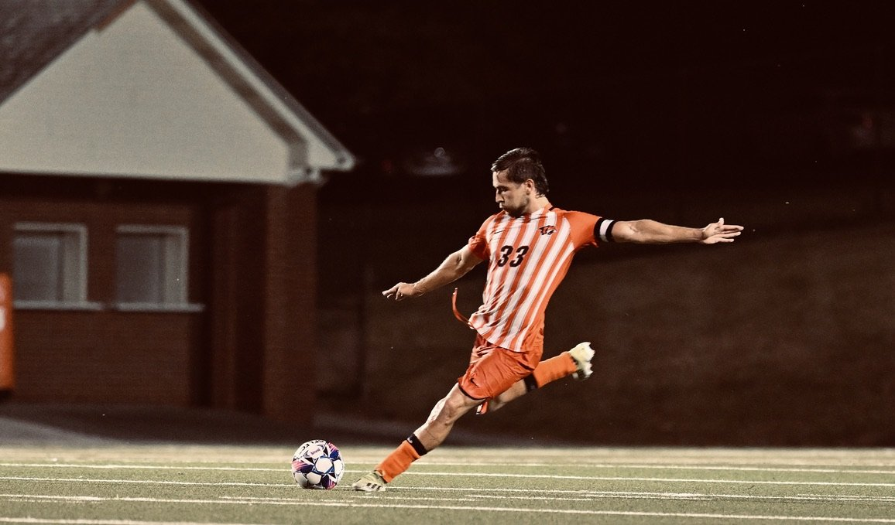
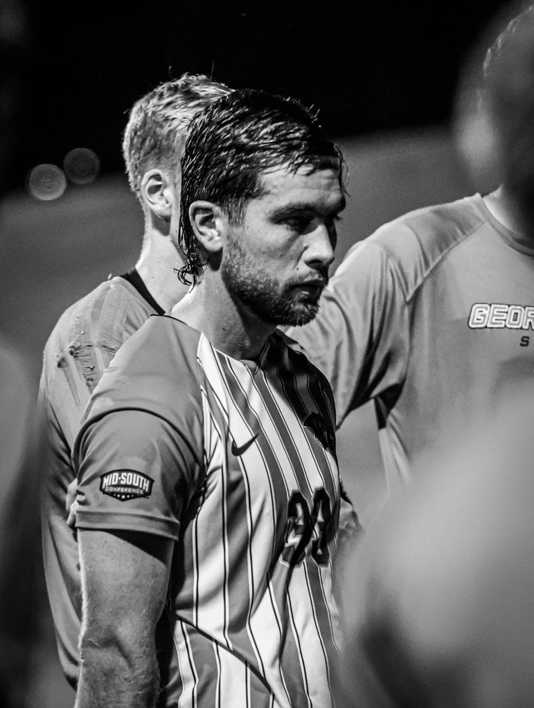

Fundador · MOVA
Esta es mi historia. La historia detrás de MOVA.
Mi línea de tiempo
Me llamo Camilo Ramírez. Soy colombiano, soy atleta, y llevo más de una década aprendiendo lo que significa no rendirse.
Tenía 13 años cuando escuché las palabras que ningún deportista quiere oír: ligamento cruzado roto. Una operación, meses de recuperación, incertidumbre. Pero volví. Me moví, y volví.
A los 18, a un paso de firmar profesionalmente en Colombia, la historia se repitió. Otra lesión. Otra operación. Otra reconstrucción. Pude haberlo dejado todo ahí. Muchos lo hubieran hecho. Pero algo en mí no podía quedarse quieto. Me moví, y volví.

"El deporte no me enseñó a ganar. Me enseñó a levantarme cada vez que perdí."
A los 19 me gané una beca deportiva para jugar en Georgetown University, en Estados Unidos. Nuevo país, nuevo idioma, solo. Lejos de mi familia, de mi tierra, de todo lo conocido. Fue el capítulo más difícil y el más formativo de mi vida.
En mi segundo año, con 21 años, llegó la tercera. Otro ligamento cruzado. En suelo extranjero, sin mi familia cerca, en medio de mis estudios y mi carrera deportiva. Ese fue el momento que me redefinió por completo.
Porque esta vez no solo me recuperé físicamente. Me senté a estudiar cada producto, cada tecnología, cada método que me ayudó a volver más rápido y más fuerte. Entendí que los accesorios correctos no son un lujo — son una herramienta que cambia el resultado.
En mi última temporada, volví al campo. Fui capitán de mi equipo y el jugador con más minutos de toda la temporada. No porque todo hubiera salido perfecto. Sino porque nunca paré de moverme.
MOVA nació de toda esa experiencia acumulada. De años usando, probando y entendiendo qué productos realmente funcionan y cuáles son solo marketing vacío. De los contactos, el conocimiento y la tecnología que descubrí a lo largo de este camino, y que hoy quiero poner al servicio de todos los atletas que merecen lo mejor.
Pero más allá del producto, MOVA nació de una convicción profunda: hay atletas que se apagan no porque les falte talento, sino porque les faltan los recursos correctos en el momento correcto. Una lesión sin tratamiento adecuado puede acabar con una carrera entera. Yo lo viví. Y eso no debería pasarle a nadie más.
Por eso construí MOVA. Para que ningún atleta tenga que elegir entre su sueño y sus medios.
Mi razón social
Por cada meta que MOVA alcance, un atleta que no tenga los recursos para recuperarse de una lesión recibirá el apoyo que necesita para volver a brillar.
Porque ningún sueño debería apagarse por falta de medios.
Move Different.
Bienvenido a MOVA.
— Camilo Ramírez, Fundador